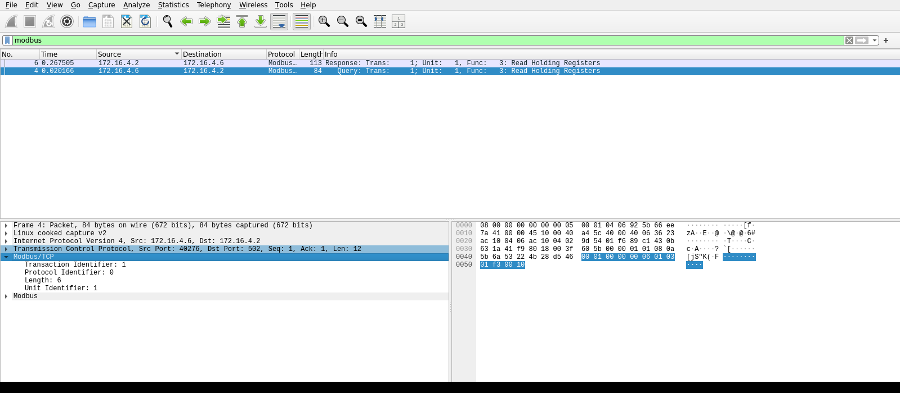

Exercise ICSPT-3.1: Anatomy of a Modbus Transaction
Engagement Status
| Client | Masa Foods, Inc. (fictional) |
|---|---|
| Role | OT Security Engineer, Plant 1 |
| Phase | Discovery Enumeration Exploitation (read-only) Reporting |
What you know so far: You can decode Modbus/TCP off the wire and fingerprint PLCs from passive captures. The next step is reading the protocol cold: issue a Read Holding Registers query with a real Modbus client, then watch the exact same exchange decode field by field in Wireshark so the MBAP header is something you can recognize on sight when you reach Plant 2 and Plant 3 later.
Environment Checklist
Every ICSPT exercise assumes you read the Before-You-Begin section in Exercise 1.1 (Touring Masa Foods) first. If you have not, open that page now: it explains the two attacker-host options (your own Kali over VPN, or the browser-mounted RangeBox) and walks you through the one-time /etc/hosts setup that lets you call every Plant 1 target by its friendly name.
Exercise 3.1 reaches plc1.masa.local on TCP/502 and docs.masa.local on TCP/80. Both names are already in your hosts file if you completed the Exercise 1.1 block. Confirm name resolution and reachability before any Modbus command:
Kali
Expected: two name-to-IP lines, two successful pings, succeeded! on TCP/502, and HTTP 200 on the docs portal. If getent returns nothing, re-run the /etc/hosts block from Exercise 1.1 with your current target IPs. If the TCP probes fail, fix connectivity (VPN tunnel or RangeBox + exercise relaunch) before continuing.
Scenario
Reyna Alvarado needs to re-verify the Plant 1 tortilla PLC after a vendor firmware audit. When the MC-7200 was commissioned, the deployment crew packed a plaintext commissioning certificate into holding registers 40500 through 40515. Reyna lost her copy and needs you to pull it from the live controller.
Why this matters
Reading the Modbus frame field by field is the single cheapest way to develop protocol-level confidence, and protocol-level confidence is what separates OT security engineers who can defend a plant from OT security engineers who can only run commercial tools. Three concrete reasons why the skill matters:
- Vendor claims verification. When an IDS vendor says "our product detects unauthorized Modbus writes," the only way to test the claim is to issue an unauthorized write yourself and watch what the IDS does. A pen tester who can read a Modbus frame off the wire can verify or debunk any vendor claim in minutes. A pen tester who only trusts the green light on a commercial client has to trust the vendor marketing.
- Detection engineering. Writing a Zeek or Snort rule that catches a specific attack pattern requires you to understand the wire format precisely enough to specify a byte-offset match. "The attacker wrote to register 40010" is not a rule; "function code 6, address
0x0009, at offset 7 from the start of the PDU" is a rule. The second form only exists because someone dissected the frame in a packet analyzer first. - Incident reconstruction. When a PCAP shows a Modbus session that looks weird, you need to know whether it is a malformed packet, a misbehaving client, or a new attack pattern. The only way to tell is to know the protocol cold.
The commissioning certificate Reyna needs is a realistic excuse to read the protocol carefully. In a real plant, the same technique would pull a firmware banner, a vendor service code, or a proprietary identification block. The specific string is a training artifact; the skill is permanent.
The flag is the decoded certificate string exactly as stored in the PLC, including the OCR{...} wrapper. No write function codes are permitted.
| Credentials in scope | Username | Password | Where it is used |
|---|---|---|---|
| Operator HMI | plant_op |
masa_op_2025 |
Reference only; Modbus reads require no login |
Objectives
- Explain the four fields of the Modbus Application Protocol header
- Read a Read Holding Registers block with a single
mbpollcommand - Identify every MBAP field in the live exchange using Wireshark
- Decode the commissioning certificate stored in registers 40500 through 40515
| Detail | Value |
|---|---|
| Difficulty | Beginner to Intermediate |
| Estimated Time | 60 to 75 minutes |
| Prerequisites | Exercises 1.1, 1.2, 2.1 |
| Flag | Source | Found? |
|---|---|---|
OCR{...} |
Decoded commissioning certificate block (40500-40515) |
Background: The Anatomy of a Modbus Request
Every Modbus/TCP request is a seven-byte MBAP header (Modbus Application Protocol header) followed by a PDU (Protocol Data Unit). You already decoded these fields in Exercise 2.1. The skill this exercise builds is reading them cold: issue one real Read Holding Registers query, then point a packet analyzer at it and name every field on sight.
The Request You Will Send
A "read 16 holding registers starting at register 40500" query carries these fields, and every one of them shows up in the Wireshark dissection you do in Checkpoint 2:
| MBAP / PDU field | Value | Hex bytes |
|---|---|---|
| Transaction Identifier | client's choice | ?? ?? |
| Protocol Identifier | 0 (always 0 for Modbus) |
00 00 |
| Length | 6 (unit byte + 5 PDU bytes) |
00 06 |
| Unit Identifier | 1 |
01 |
| Function Code | 3 (Read Holding Registers) |
03 |
| Starting Address (Reference Number) | register 40500 is wire address 499 |
01 F3 |
| Quantity (Word Count) | 16 |
00 10 |
You do not assemble those bytes by hand. mbpoll is a standard Modbus/TCP command-line client, and one invocation sends exactly this frame. Wireshark then decodes the captured packet so you can match each dissected field back to the table above. Reading the protocol exchange in a packet analyzer, rather than scripting the bytes yourself, is the core OT analyst skill, and it is what you turn into a detection signature later.
Tools You Will Need
| Tool | Purpose | Check |
|---|---|---|
mbpoll |
Modbus/TCP command-line client: read holding registers with no code | which mbpoll |
Wireshark / tshark |
Capture the query on TCP/502 and decode every MBAP field | wireshark --version |
curl, jq |
Fetch the commissioning procedure from the docs portal if needed | curl --version |
Methodology
You build the answer with tools, not scripts. Checkpoint 1 confirms the PLC is live and reads the certificate block with one mbpoll command. Checkpoint 2 captures that same query and walks every MBAP field in the Wireshark dissection. Checkpoint 3 decodes the register bytes to ASCII by hand, which is the permanent skill, and records the flag.
Checkpoint 1: Read the Certificate Block with mbpoll
Confirm the PLC answers first. Register 40001 on the MC-7200 holds the oven process value, so a single read of it is a harmless liveness check before you touch the certificate block. Documented holding registers live in the 4xxxx range, and mbpoll's -r option takes the register number without the leading 4, so documented register 40001 is -r 1.
Kali
-1 polls once and exits, -a 1 is the Modbus unit id, -t 4 selects holding registers (Function Code 3), -r 1 reads documented register 40001, and -c 1 reads a single register. Port 502 is the default. Any value near 3500 (the oven PV in tenths of a degree) confirms the controller is running. The exact value drifts because of the process simulation.
Expected output
A value near 3500 (the oven PV in tenths of a degree) confirms the controller is live. Yours will differ slightly because the process simulation drifts.Where the register numbers come from. You are not guessing addresses. The Plant 1 commissioning procedure on the docs portal (http://docs.masa.local/) records that the deployment crew packed the certificate into holding registers 40500 through 40515: sixteen registers, each carrying two ASCII characters, big-endian (high byte first). On a real plant the move is identical, which is to read the vendor's register map before you touch the PLC.
The documented register, the wire address, and what mbpoll wants. Holding registers are documented in the 4xxxx range. On the wire the address is zero-based and drops the leading 4, so documented register 40500 is wire address 499. The mbpoll tool hides that arithmetic for you: its -r option takes the register number without the leading 4, so -r 500 reads documented register 40500. Reading the sixteen-register block 40500 through 40515 is therefore -r 500 -c 16.
| Documented register | Holds | mbpoll -r |
|---|---|---|
| 40500 through 40515 | commissioning certificate (2 ASCII chars per register, big-endian) | 500, count 16 |
Read the block with one command. There is no client to write. A single mbpoll read covers the whole sixteen-register block in one Function Code 3 transaction.
Kali
Same options as before, except-r 500 starts at documented register 40500 and -c 16 reads the sixteen-register certificate block. mbpoll labels each value with its register number, so you read the layout straight off the output.
Expected output
Sixteen decimal values, one per register from 40500 through 40515, exactly the block width the docs promised. They spell the certificate two ASCII bytes at a time, masked here so you run the read and decode the string yourself in Checkpoint 3.The sixteen values on your screen are the certificate, one register at a time, as decimal integers. They are not human-readable yet because each register is two packed ASCII bytes. You convert them to text by hand in Checkpoint 3. Do not try to read the certificate off the decimal output by eye.
Checkpoint 2: Identify Every MBAP Field in Wireshark
mbpoll is the fast path; Wireshark is how you understand the exchange and, later, write a rule that detects it. The lab is literally an MBAP deep dive, and the header is taught best by reading the dissected packet, not by packing bytes with struct.
Capture the query while you run it. Start a capture on TCP port 502, re-run the Checkpoint 1 read, then stop the capture and set the display filter to modbus. Wireshark decodes the Modbus layer for you and breaks the MBAP header into its named fields.
Kali (shell one)
Kali (shell one, after the read completes)
The fields you pull out (transaction id, protocol id, length, unit id, function code, reference number, word count) are the seven MBAP and PDU fields from the Background table.Now open the capture in the Wireshark GUI. The terminal fields prove the data is there; the GUI is where you learn to recognize the header on sight. Walk these steps exactly:
- Open the capture. From a terminal run
wireshark /tmp/modbus_mbap.pcap &, or inside Wireshark choose File > Open and pick the file. To capture live instead, double-click your network interface on the Wireshark welcome screen to start, run thembpollread, then click the red square Stop button in the toolbar. - Filter to Modbus. In the display filter bar (the wide bar directly under the toolbar), type
modbusand press Enter. The packet list narrows to just the query and its response. - Select the query. In the Packet List (top pane), click the row whose Info column reads
Query: ... Func: 3: Read Holding Registers. - Expand the MBAP header. In the Packet Details (middle pane), click the arrow to the left of Modbus/TCP. The four MBAP fields drop down: Transaction Identifier, Protocol Identifier, Length, and Unit Identifier.
- Expand the PDU. Click the arrow next to the Modbus node just below it to see the Function Code, Reference Number, and Word Count.
- Tie a field to the bytes. Click any field name and watch the matching bytes highlight in the Packet Bytes pane at the bottom. That is how you connect a decoded field to its exact position on the wire.
Your screen should match the capture below:

modbus, with the MBAP header tree expanded. The query decodes to Transaction Identifier (the client's choice), Protocol Identifier 0, Length 6, Unit Identifier 1, Function Code 3 (Read Holding Registers), Reference Number 499 (the zero-based wire form of documented register 40500), and Word Count 16, which is exactly what your -r 500 -c 16 asked for. Reading the header this way, rather than packing the bytes yourself, is the core OT analyst skill, and it is what you turn into a detection signature later.Match each dissected field to its meaning. Fill this in from your own capture. Every value except the transaction identifier is fixed by the request you sent; the transaction identifier is whatever mbpoll chose for this exchange, and you read it off the Wireshark dissection.
| MBAP / PDU field | Meaning | Your captured value |
|---|---|---|
| Transaction Identifier | client-chosen, echoed by the PLC so a client can match replies to requests | _____ |
| Protocol Identifier | always 0 for Modbus |
_____ |
| Length | bytes that follow: unit id + PDU (6 for this read) |
_____ |
| Unit Identifier | Modbus slave address (1) |
_____ |
| Function Code | 3, Read Holding Registers |
_____ |
| Reference Number | zero-based start address (499 = documented 40500) |
_____ |
| Word Count | registers requested (16) |
_____ |
Checkpoint 3: Decode the Registers to ASCII and Record the Flag
The certificate block is sixteen registers of two ASCII bytes each, high byte first, which is the Modbus big-endian convention. The decode is the same byte split you used in Exercise 1.2: convert each register's decimal value to hex, then read the two bytes as characters.
Walk one register so the method is clear. A register reading 19777 is 0x4D41 in hex. The high byte is 0x4D, which is the ASCII character M. The low byte is 0x41, which is A. So that register carries MA. Apply the same split to every register in your Checkpoint 1 output, in register order, and concatenate the characters. The last few registers of the block are null padding (0x0000); drop the trailing nulls. The remaining characters spell the commissioning certificate, OCR{...} wrapper included, and that is your flag.
The worked 0x4D41 -> MA example is deliberately not part of the real certificate, so you still have to run the read and do the decode yourself. The platform tells you immediately whether the decoded string is correct, so the finished flag is not printed here.
Record the MBAP breakdown for Reyna's engagement log. Fill in the table from your Wireshark capture and submit the flag.
Request MBAP breakdown:
Field Value Hex bytes Transaction ID _____ ?? ??Protocol ID 0 00 00Length 6 00 06Unit ID 1 01Function Code 3 03Reference Number 499 01 F3Word Count 16 00 10Decoded commissioning certificate: _____
The flag is the decoded certificate itself: the registers spell an
OCR{...}string directly, so submit it exactly as you decoded it (it begins withOCR{and ends with}).Flag:
OCR{________________}
Output Interpretation
- One
mbpollinvocation produces exactly the frame the Background table describes; Wireshark shows the same fields you would otherwise have packed by hand - The commissioning certificate is a run of ASCII characters followed by null bytes of padding (enough to fill the sixteen-register block), which is why you drop the trailing
0x00registers during the decode - A Read Holding Registers response with byte count 32 carries exactly 16 register values (byte count divided by two). That invariant is what tells you how many two-byte ASCII pairs to decode
mbpolluses an ephemeral TCP source port like any Modbus client. There is no session state other than TCP, which is why the transaction identifier is the only per-request field the client controls
Analysis Questions
1. The MBAP Length field on your query read 6. What is it counting, and what happens if a client sets it wrong?
Reveal answer
The Length field counts the unit identifier byte plus every PDU byte that follows, not the whole frame. For a Read Holding Registers query that is one unit byte plus five PDU bytes (function code, two address bytes, two quantity bytes), which is six. The PLC uses the field to decide how many bytes to read from the socket. A client that sets it too small leaves the PLC reading only part of the request, then treating the leftover bytes as the next transaction, so it answers with garbage or closes the socket. Too large, and the PLC blocks waiting for bytes that never arrive. Compliant Modbus parsers treat any length mismatch as a protocol error, and some older PLCs crash on it. You did not have to compute the field yourself because mbpoll set it correctly; reading it back in Wireshark is how you would catch a misbehaving client that did not.
2. The Transaction Identifier was the one MBAP field the client chose. Why does the protocol have it?
Reveal answer
The transaction identifier lets a client match each reply to the request that produced it. The PLC echoes the value unchanged in its response, so a client that pipelines several requests over one connection can pair every response with the right query even if they come back out of order. mbpoll chose a value for this single read; a long-running HMI walks the counter upward across its requests. You can watch the counter increment by filtering Wireshark to modbus during a busy poll cycle.
3. Could you read all 16 certificate registers in one query, or did the block require several reads?
Reveal answer
One query covered the whole block. The Read Holding Registers function allows up to 125 registers per request, so the sixteen-register certificate is well within the limit, and that is why a single mbpoll -r 500 -c 16 returned everything. Splitting a block into smaller reads becomes necessary only when a PLC restricts its accepted range, which is rare for modern controllers but common enough on fragile legacy gear that you should always read the vendor's documented limits first.
4. The commissioning certificate is stored in plaintext ASCII. What would a defender use instead if they wanted some protection?
Reveal answer
A real plant would not store a certificate in Modbus holding registers at all. The registers are readable by every host on the operations VLAN. A defensible design puts authentication material in a secure element on the PLC, signs firmware updates with vendor keys, and logs every program upload through an engineering workstation audit trail. The plaintext block exists in this exercise so you can practice byte-level decoding.
Defensive Recommendations to Masa
| Finding | Risk | Mitigation |
|---|---|---|
| Plaintext commissioning data in holding registers | Medium | Move the certificate to vendor service binders off the network, not into the PLC memory map |
| Unauthenticated Modbus reads against the MC-7200 | Critical | Implement network segmentation so only the HMI and engineering workstation can reach TCP/502 |
| Transaction identifier not validated | Low | Accept as a protocol limitation; compensating control is monitoring |
Key Takeaways
- A Read Holding Registers query is a twelve-byte frame; one
mbpollcommand sends it and onembpollcommand reads the whole certificate block - The MBAP length field is the unit identifier plus PDU byte count, not the entire frame length, and Wireshark labels each MBAP field for you
- Reading the protocol exchange in a packet analyzer, rather than scripting the bytes, is the OT analyst skill that becomes a detection signature later
- Byte-level decoding of ASCII-packed registers is the same pattern you used against the PCAP in Exercise 1.3